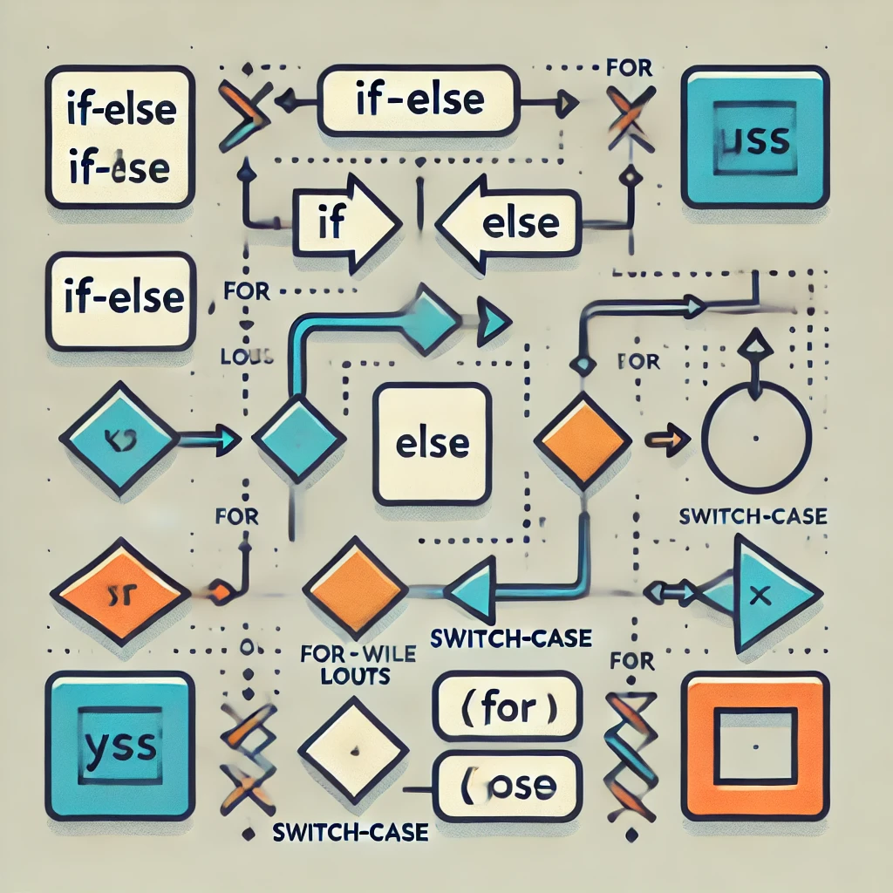
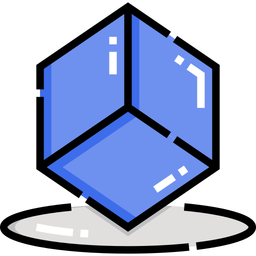

Sesiones avanzadas
Aquí encontrará las sesiones entre el rango [8,12] de las clases de programación web I, incluyendo los ejercicios propuestos.

Aquí encontrará las sesiones entre el rango [8,12] de las clases de programación web I, incluyendo los ejercicios propuestos.
Combina CSS y JavaScript para estilizar elementos de una página HTML.Esta herramienta proporciona interactividad con la página, por lo que ofrece una serie de componentes que facilitan la comunicación con el usuario.

Nos permite generar hojas de estilos, añadiendo características que no tiene CSS y que son propias de los lenguajes de programación, como pueden ser variables, funciones, selectores anidados, herencia, etc.
JavaScript es un robusto lenguaje de programación que se puede aplicar a un documento HTML y usarse para crear interactividad dinámica en los sitios web. Fue inventado por Brendan Eich, cofundador del proyecto Mozilla, Mozilla Foundation y la Corporación Mozilla.

Las estructuras de control como if-else, switch y bucles son esenciales en la programación para tomar decisiones y repetir acciones según condiciones específicas. Los arreglos permiten manejar colecciones de datos de manera eficiente, mientras que los closures en JavaScript permiten a las funciones mantener acceso a su entorno original, facilitando la creación de funciones con estado y encapsulación. Estos conceptos son fundamentales para escribir código dinámico y flexible.
Un objeto es una colección de propiedades, y una propiedad es una asociación entre un nombre (o clave) y un valor. El valor de una propiedad puede ser una función, en cuyo caso la propiedad es conocida como método
